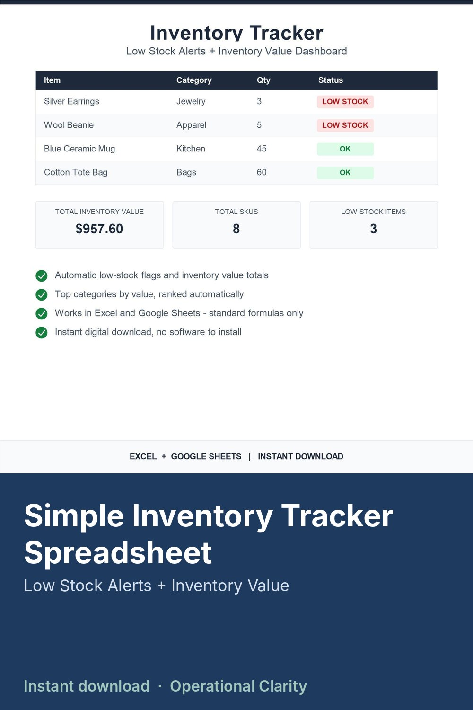

Simple Inventory Tracker Spreadsheet

Simple inventory tracker spreadsheet for small business, boutique, resale and handmade shops: low stock alerts, total inventory value and a dashboard, in Excel or Google Sheets.
INVENTORY TRACKER FOR SMALL BUSINESS (INSTANT DOWNLOAD)
Track every product you stock, get flagged automatically when something is running low, and see your total inventory value at a glance-no manual math, no separate low-stock list to maintain.
Best for: small business owners, makers, Etsy sellers, boutique and retail shop owners-anyone who needs a simple, reliable way to know what they have and what they are about to run out of.
What this system does (built into the file):
- Flags each item as OK or LOW STOCK automatically based on your own threshold
- Calculates total inventory value across your whole catalog
- Ranks your top categories by value
- Optional stock in/out log for your own records
Includes (1 file):
Inventory Tracker spreadsheet (.XLSX)
How to use (inside the file):
Open the START HERE tab for the exact setup steps:
1. Go to the INVENTORY tab and replace the sample rows with your own products
2. Set a low stock threshold for each item
3. Go to the DASHBOARD tab-total value and low stock alerts update automatically
Compatibility:
Works in Excel (.xlsx). You can also upload the file to Google Drive and use it in Google Sheets. All formulas are standard SUMIF/COUNTIF/IF - no Google-only functions, so nothing breaks when opened in Excel.
License:
Personal / single-business use only. No reselling, sharing, or redistribution (including modified versions).
Digital item notice:
This is a digital download. No physical product will be shipped.